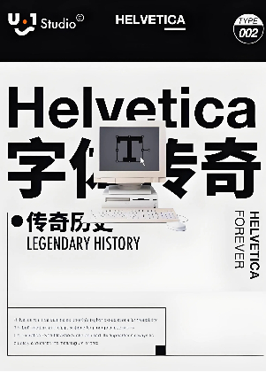
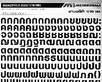
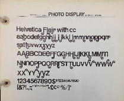
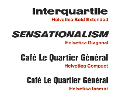
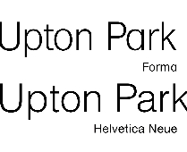

Helvetica
History
-
The first version of the typeface (which later became known as Helvetica) was designed in 1956 by Max Miedinger with art direction by Eduard Hoffmann. His goal was to design a new sans serif typeface that could compete in the Swiss market as a neutral face that should not be given any additional meaning. The main influence on Helvetica was
Akzidenz-Grotesk from Berthold; Hoffman's scrapbook of proofs of the design shows careful comparison of test proofs with snippets of Akzidenz-Grotesk. Its 'R' with a curved tail resembles
Schelter-Grotesk, another turn-of-the-century sans-serif sold by Haas. Wolfgang Homola comments that in Helvetica "the weight of the stems of the capitals and the lower case is better balanced" than in its influences.
-
Attracting considerable attention on its release as Neue Haas Grotesk (Nouvelle Antique Haas in French-speaking countries), Stempel and
Linotype adopted Neue Haas Grotesk for release in
hot metal composition, the standard typesetting method at the time for
body text, and on the international market.

-
In 1960, Stempel (the German parent company of Haas) changed the typeface's name to Helvetica, to make it more marketable internationally; it comes from the Latin name for the
pre-Roman tribes of what became Switzerland. Intending to match the success of
Univers, Arthur Ritzel of Stempel redesigned Neue Haas Grotesk into a larger typeface family.The design was popular:
Paul Shaw suggests that Helvetica "began to muscle out" Akzidenz-Grotesk in New York City from around summer 1965, when Amsterdam Continental, which imported European typefaces, stopped pushing Akzidenz-Grotesk in its marketing and began to focus on Helvetica instead.
-
It was also made available for phototypesetting systems, as well as in other formats such as
Letrasetdry transfers and plastic letters, and many phototypesetting imitations and knock-offs were rapidly created by competing phototypesetting companies. In the late 1970s and 1980s, Linotype licensed Helvetica to
Xerox, Adobe and Apple, guaranteeing its importance in digital printing by making it one of the core
computer fonts of the PostScript page description language. This led to a version being included on Macintosh computers, with
Arial (a metrically compatible clone) included with Microsoft Windows computers. The rights to Helvetica are now held by
Monotype Imaging, which acquired Linotype; the Neue Haas Grotesk digitisation
(discussed below) was co-released with Font Bureau.



